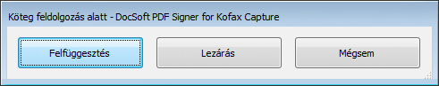

Amennyiben a PDF Signer for Tungsten Capturemodult úgy kívánjuk bezárni, hogy egy köteg hitelesítése még folyamatban van, akkor az alábbi ablak jelenik meg:

Köteg felfüggesztése, lezárása ablak
Ebben az ablakban választhatjuk ki, hogy felfüggesztjük a feldolgozást, hogy később visszatérjünk a kötegre, vagy lezárjuk a köteget és az továbbhalad a feldolgozási folyamaton. Amennyiben olyan köteget akarunk lezárni, amely még hitelesítésre váró iratokat tartalmaz, akkor a köteg lezárás helyett automatikusan felfüggesztésre kerül.
Copyright © 2025. Doc-Soft Kkt. Minden jog fenntartva.